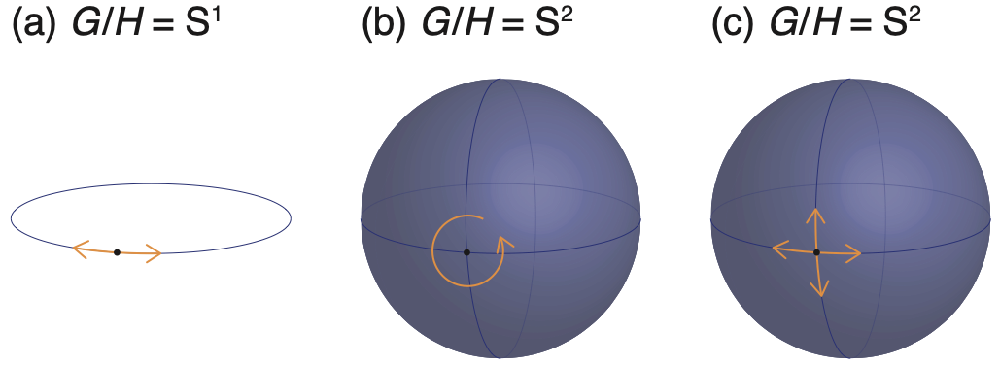
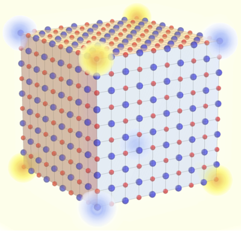
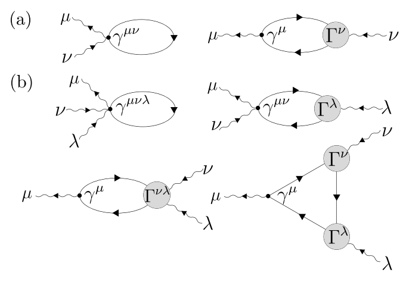
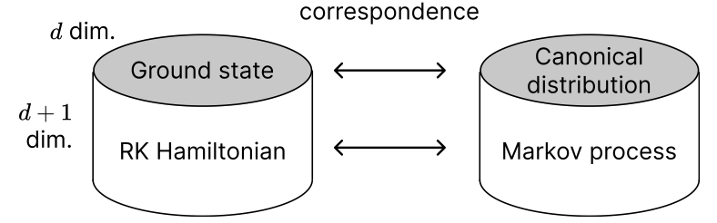
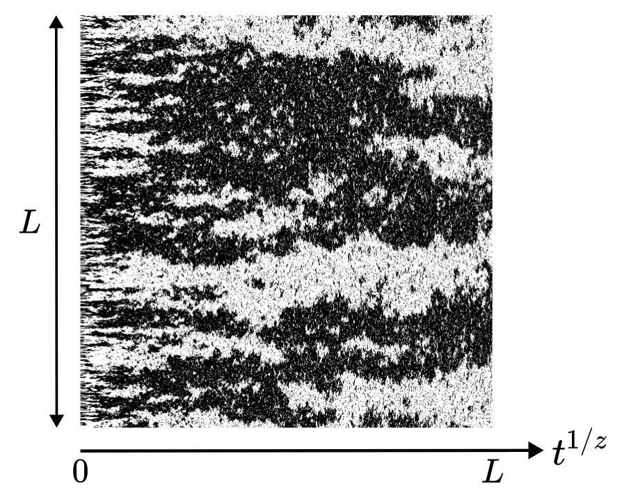
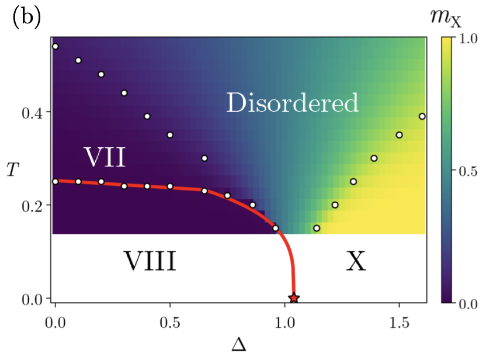

研究
当研究室は、量子多体系の普遍的構造を「対称性」という統一的な視点から研究しています。 中心となるのは、自発的対称性の破れ、トポロジカル相、量子格子模型の厳密な数学的構造など、 凝縮系物理における対称性に関連する現象の基礎と帰結です。 我々は厳密な理論（一般定理の証明、no-go 定理、束縛の導出）と、 広く応用可能な枠組み（230 ある結晶空間群すべてで使える対称性指標など）、 そして実在物質に対する具体的予言とを組み合わせて研究を進めています。 現在の研究は、相互に関連した以下の 5 つの方向に分かれます。
1. 自発的対称性の破れと南部・ゴールドストーンボソン

連続対称性が自発的に破れると、必ず南部・ゴールドストーン（NG）ボソンと呼ばれるギャップレス励起が現れます。 古典的なゴールドストーンの定理は、破れた対称性の生成子 1 つにつき 1 つのモードを予言します。 しかし非相対論的な系（凝縮系の多くがこれに含まれる）では、NG モードの数や分散関係はこの古典的描像から大きく逸脱することがあります。 例えば強磁性マグノンは線形ではなく 2 次の分散を持ちますし、「期待される」モード数を生み出さない対称性の破れ方も存在します。
我々はこれら長年の疑問を統一的に解消するカウント則を確立しました （PRL 108, 251602 (2012); PRX 4, 031057 (2014); Annu. Rev. Condens. Matter Phys. 11, 169 (2020) でレビュー）。 同じ枠組みから、平衡状態における量子時間結晶の不在を厳密に証明することにも成功しています （PRL 114, 251603 (2015)）。これは、時間並進対称性が基底状態で自発的に破れることはないことを意味します。
最近の研究では、これらの定理の限界を試す驚くべき例も発見されました。 絶対零度で連続 $U(1)$ 対称性を自発的に破る 1 次元スピン模型 ― マーミン・ワグナーの定理に対する顕著な反例 ― の発見です （PRL 133, 176001 (2024)、Editors' Suggestion）。
本テーマに関する研究のうちのいくつかは、より詳細を解説したプレスリリースが公開されています：
- 「連続対称性の自発的破れを示す 1 次元スピン模型の発見 ―マーミン・ワグナーの定理の新しい反例―」（2024年10月25日）
- 「『時間結晶』が不可能であることの証明 ―ノーベル賞物理学者の新理論を明確に否定―」（2015年6月22日）
- "Theorem unifies superfluids and other weird materials", UC Berkeley News（2012年6月8日）
2. トポロジカル相と対称性指標

トポロジカル絶縁体の発見以降、絶縁体のバンド構造の分類は凝縮系物理の中心的問題となりました。 我々は、ブロッホ波動関数の対称性表現だけを用いて任意のバンド絶縁体のトポロジーを判定できる、 対称性に基づく枠組みを開発しました。この枠組みは 230 の非磁性空間群および 1651 の磁性空間群の全てを網羅し （Nat. Commun. 8, 50 (2017); Sci. Adv. 4, eaat8685 (2018)）、 さらに全ての空間群におけるトポロジカル超伝導体にまで拡張されています（Sci. Adv. 6, eaaz8367 (2020)）。 また、ワニエ記述に抵抗を示しつつも通常のトポロジカル絶縁体の枠組みには収まらない 「フラジャイル・トポロジー」の概念も明確化しました （PRL 121, 126402 (2018)、Editors' Suggestion）。
同じ着想から、有限サイズの NaCl 結晶の角に $\pm e/8$ の分数電荷が現れるという具体的な予言も得られました （PRX 11, 041064 (2021)）。これは身近な食塩の中に潜む高次トポロジカル現象です。 物質側では、トポロジカル超伝導体の網羅的探索を主導しています （PRL 129, 027001 (2022)、Editors' Suggestion）。
本テーマに関する研究のうちのいくつかは、より詳細を解説したプレスリリースが公開されています：
- 「量子測定が誘起するトポロジカル相のバルクエッジ対応」（2025年6月19日）
- 「網羅的なトポロジカル超伝導物質探索へ向けた新データベースの構築」（2022年7月7日）
- 「塩の結晶の角が分数電荷を持つことを理論的に解明 ―身近な結晶に潜むトポロジカルな性質の発見―」（2022年1月4日）
- 「対称性に基づいた超伝導体のトポロジーの判定法の確立」（2020年5月1日）
- 「『トポロジカル絶縁体』と『普通の絶縁体』の中間の新しい絶縁体の発見」（2018年9月17日）
- 「新種のトポロジカル絶縁体の性質を理論的に解明」（2018年9月17日）
- 「半金属や絶縁体のトポロジカルな性質を表す指標の発見」（2017年7月2日）
3. 超伝導体の非線形電磁応答

近年のテラヘルツ実験により、超伝導体の非線形光学応答 ― とりわけ第三高調波生成 ― が観測可能になりました。これは捉えどころのないヒッグスモードの兆候として解釈されています。 しかし、これらの応答の微視的理論を構築することは予想以上に微妙です。 素朴な摂動論的公式はゲージ不変性をスプリアスに破ってしまいますし、 集団モード（ヒッグス、南部・ゴールドストーン）と準粒子の寄与をきちんと分離する必要もあります。
我々は BCS 超伝導体における非線形光学応答のゲージ不変な定式化（arXiv:2410.18679; arXiv:2501.13722）を開発し、 さらに任意の次数で非線形光学伝導度を制約する厳密な f-sum 則を導出しました （Phys. Rev. B 102, 165137 (2020)）。 最近では、第三高調波生成におけるヒッグスモードと準粒子の競合に量子幾何学が果たす役割の定量化に取り組んでいます （arXiv:2512.01200）。
4. フラストレーションのない量子多体系


強相関物理で名を馳せる多くの模型 ― AKLT 鎖、トーリック符号、Rokhsar-Kivelson 二量体模型、安定化子符号など ― は共通の数学的構造を持っています。 すなわち、それらは「フラストレーションのない（frustration-free）」模型であり、 ハミルトニアンの各局所項が同時に基底状態によって最小化されます。 この特殊な構造のおかげで、これらの模型は解析的に扱いやすい一方、 対称性で守られた相、トポロジカル秩序相、フラクトン相など、 極めて多様な相をホストすることができます。
我々はギャップレスのフラストレーションのない系に対する一般理論を構築し、 動的臨界指数や有限サイズギャップに関する厳密な束縛を導出しています。 主な成果には、任意のギャップレスフラストレーションのない系で動的臨界指数が $z \geq 2$ を満たさなければならないことの証明 （Phys. Rev. X 15, 041050 (2025); PRB 110, 195140 (2024)）、 および古典イジング模型に対する類似の厳密な束縛 ― 動的普遍性クラスに関する 100 年来の問題を解決 ― （J. Stat. Phys. 192, 76 (2025)）が挙げられます。 さらに、フラストレーションのない自由フェルミオン系の風景の解明も進めています （PRB 112, 115104 (2025); arXiv:2503.12879; arXiv:2503.14312）。
本テーマに関する研究のうちのいくつかは、より詳細を解説したプレスリリースが公開されています：
5. スピン氷と水氷の相

液体の水と水蒸気は大気圧では非常に異なって見えますが、実は別々の物質相ではありません。 臨界点を回り込むことで、相転移を経由せずに連続的に変換できるからです。 これらは単一の相が見せる 2 つの顔にすぎません。
ここから、高圧の水氷について興味深い問いが生じます。 多数の既知の氷相のうち、氷 VII 相と氷 X 相は同じ結晶対称性を持ち、氷 VIII 相は異なる対称性を持ちます。 では VII と X は実は同じ相であり、連続的なクロスオーバーで結ばれているのではないか? ちょうど液相と気相の関係のように。
我々のグループによる最近のモデル研究はこれを肯定的に答えています。 水氷の微視的格子模型では、相 VII と相 X は磁気モノポール的なプロトン欠陥のスクリーニングを通じて連続的に結ばれる一方、 対称性の異なる氷 VIII は真の相転移によって VII から分離されています（arXiv:2603.19620）。
これは、より深い一般的な問いへとつながります。 同一の対称性を持つ有限温度相の中に、絶対零度におけるトポロジカル相分類と類似の、 より細かい区別 ― 熱揺らぎを生き延びて分類ラベルとして意味を持ち続けるもの ― は存在しうるか? 我々はこの問いをパイロクロアスピン氷を通じて並行して追究しています。 スピン氷の基底状態が従う「アイス・ルール」は、水氷のプロトン配置を支配するルールと数学的に同一であり、 創発ゲージ場、フラクショナル化された励起（磁気モノポール）、トポロジカル秩序を宿します。 最近の研究では、任意のスピン $S$ に対するパイロクロアスピン氷のトポロジカル相転移を分類し、 見かけ上異なる模型を関係づける双対性を明らかにしました （arXiv:2603.03852; arXiv:2604.04346）。
これらのプロジェクトは総じて、トポロジーや統計場の理論の現代的ツールを、 100 年以上にわたって研究されてきた物質や問題に応用しようとする試みです。